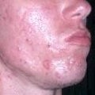
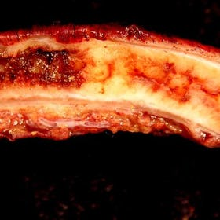
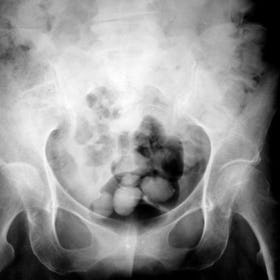
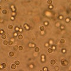
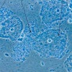
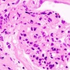
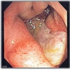
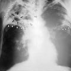
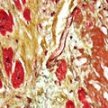

Diseases that require Antibiotics
-

Acne
Symptom: Papule, Pustule, Nodule +more
Treatments: Photodynamic therapy, Benzoyl peroxide, Resorcinol +more
Risk Factors: Family history of acne, Adolescence, Poor hygiene +more
Parent Disease: Skin Disease
-

Appendicitis
Symptom:Rectal tenesmus, Nausea, Anorexia
Treatments:Intravenoustherapy,Antibacterial,Appendectomy
Risk factors:Lymphadenopathy,Trauma,Intestinal parasite
Parent Disease: Gastrointestinal Disorder, Preterm birth
-

Bacterial arthritis
Symptom:Vertigo, Falling, Mental confusion
Treatments: Low sodium diet, Antibacterial, Surgery
Risk factors:Old age
Parent Disease: Otorhinolaryngologic Diseases
-

Urinary tract infection
Symptom:Urethritis, Urinary urgency, Dysuria
Treatments:Piperacillin, Hexamethylenetetramine, Dicloxacillin
Risk factors:Personal History of Sexually transmitted disease, Diabetes mellitus, Foley catheter
Parent Disease:Preterm birth, Infectious disease, Urologic disease
-

Bacterial vaginosis
Symptom: Vaginal odor, Vaginal tenderness, Asymptomatic
Treatments: Antibacterial, Povidone, Metronidazole
Risk factors:Multiple sexual partners, Unsafe sex, Menopause
Parent Disease:Infectious disease
-

Nephrotic syndrome
Symptom: Hyperlipidemia, Edema, Anorexia
Treatments: Quinethazone, Chlorothiazide, Cyclothiazide
Risk factors:Personal History of Systemic Lupus Erythematosus, Nephropathy, Male
Parent Disease:Male urologic disease, Female urologic disease
-

Gastritis
Symptom:Nausea, Flatulence, Anorexia
Treatments:Sucralfate, Antibacterial
Risk factors:Lupus erythematosus, Aspirin, Smoking
-

Tuberculosis
Symptom:Dyspnea, Chronic cough, Night Sweats
Treatments:4-Aminosalicylic acid, Ethambutol, Antibacterial
Risk factors:AIDS, Smoking, Diabetes mellitus
Parent Disease:Infectious disease
-
Vertigo
Symptom:Nausea, Vision disorder, Muscle weakness
Treatments:Diphenidol, Anticholinergic, Serotonin–norepinephrine reuptake inhibitor
Risk factors: Vestibular neuronitis, Adverse drug reaction, Sinusitis
-

Cardiovascular disease
Symptom:Dyspnea, Dizziness, Palpitation
Treatments:Beta blocker, ACE inhibitor, Stress management
Risk factors:Poor hygiene, Obesity, Male
Parent Disease:Cardiovascular disease, Rheumatic fever, Ill-defined descriptions and complications of heart disease